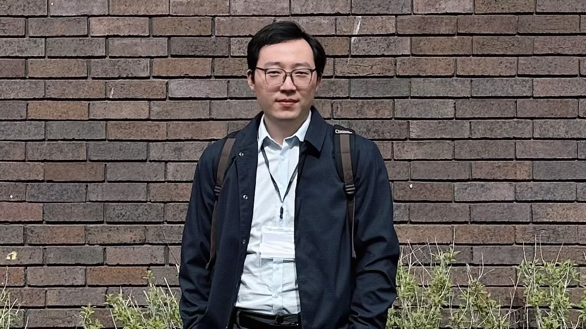

Academics
Research Interests
- Generative Syntax: adverb syntax; Chinese dialects syntax (esp. Wu Chinese)
- Minimalist Program: Merge; Phase; Labeling; Workspace
- Distributed Morphology
- Syntax-Prosody Interface
- Natural Language Processing (Python)
Education
| Year | Degree | Institution |
|---|---|---|
| 2023-present | Doctor of Philosophy (Ph.D.) in Linguistics Primary Research Topic: Reduplicated Adverbs in Mandarin |
Newcastle University, UK |
| 2021-2022 | Master of Arts (M.A.) in Linguistics with Distinction Dissertation: V-Kua Structure in Shaoxing Wu Chinese: A VP-shells Approach (Grade:80) |
University of Leeds, UK |
| 2019-2021 | Bachelor of Arts (B.A.) in English Language and Literature | China Jiliang University, Hangzhou, China |
| 2016-2019 | Diploma in Business English | Zhejiang Financial College, Hangzhou, China |
Teaching
- [SEL1027: Introduction to the Structure of Language 1: Phonetics, Phonology & Morphology] Semester 1, 2024-25, Newcastle University. Seminar Leader of the morphology session.